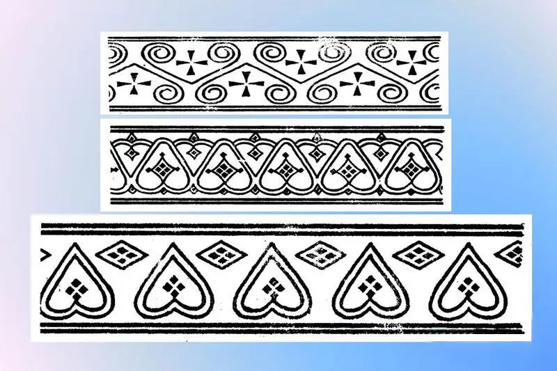

Выбери направление
Редизайн Mini App
Вариант A
Церемониальный вход
Главный экран как афиша: логотип, событие, одна сильная кнопка.
голосование открыто
Игры Дыгына 2026
16 участников · финал
Дыгын ОонньуулараФинал 2026
Вариант B
Спортивная сетка
Сразу участники, проценты поддержки и быстрый выбор топ-2.
16участников
0голосов
1
Айаал ПетровЯкутск · 100 очков
выбран
2
Ньургун ИвановЧурапча · 0%
+
100 / 100

Вариант C
Орнаментальный минимализм
Якутский узор как фон и разделители, но контент остаётся тихим.